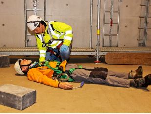

Das Hängetrauma ist ein medizinischer Notfall. Es ist umgehend der Notruf abzusetzen. Notärztliche Hilfe anfordern!
Nach der Rettung der Person sind die üblichen Maßnahmen der Ersten Hilfe anzuwenden (siehe DGUV Information 204-007 "Handbuch zur Ersten Hilfe").
Die initiale Lagerung richtet sich nach dem Wunsch des Betroffenen.
Häufig ist eine Flachlagerung sinnvoll1.
Auf weitere Verletzungen durch den Sturz ist zu achten.
Bei der rettungsdienstlichen Versorgung ist unter anderem zu denken an:

Abb. 8 Flachlagerung nach der Rettung aus der hängenden Position
|
1 Die früher empfohlene Kauerstellung ist hinfällig und wird nicht mehr gelehrt. |